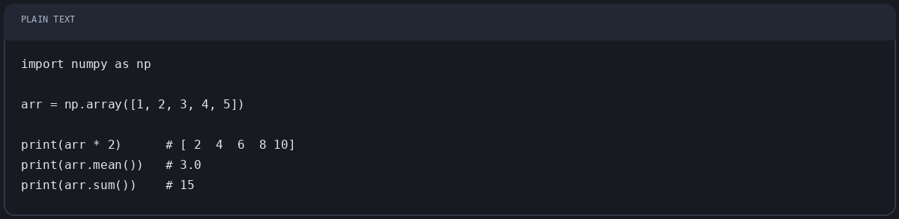
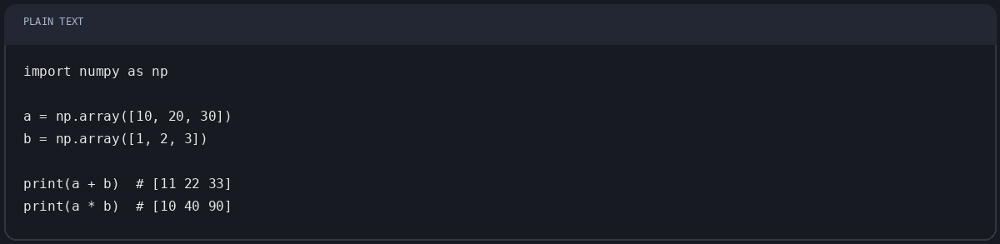
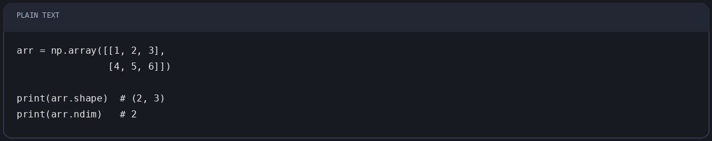

📚 2주차 Python 데이터 분석 (2026.10.21 Wed ~ 2026.10.23 Fri)
Total : 3 days
📕 A. NumPy (2026.10.21 Wed)
📃 a. Google Colab (구글 코랩)
- Google Colab : 웹 브라우저에서 Python 코드를 작성하고 실행할 수 있는 클라우드 기반 환경
- 별도의 Python 개발 환경 설치 없이 노트북 형태로 코드 실행 가능
- 주요 활용 : 데이터 분석, 머신러닝, 딥러닝 실습
- GPU 런타임 : 지원되는 환경에서 GPU를 활용해 연산 가능
📃 b. NumPy (고속 수치 계산의 기반)
- NumPy : 배열(Array)을 기반으로 대량의 숫자 데이터를 효율적으로 계산하는 Python 라이브러리
- ndarray : NumPy의 핵심 자료구조인 다차원 배열
- Python 리스트보다 수치 연산에 효율적이며, 여러 요소에 연산을 한 번에 적용할 수 있음 (Vectorization)

📃 NumPy 주요 기능
| 문법 | 기능 |
|---|---|
np.array() | 배열 생성 |
np.zeros((2, 3)) | 0으로 채운 배열 생성 |
np.ones((2, 3)) | 1로 채운 배열 생성 |
np.arange(0, 10, 2) | 일정 간격의 배열 생성 |
arr.shape | 배열의 형태 확인 |
arr.ndim | 배열의 차원 확인 |
arr.reshape() | 배열 형태 변경 |
arr.mean() | 평균 계산 |
arr.sum() | 합계 계산 |
arr.max() / arr.min() | 최댓값 / 최솟값 계산 |
📃 배열 연산 (Vectorization)
- 반복문 없이 배열의 여러 요소에 연산을 한 번에 적용
- 대량의 수치 데이터 처리에 유용

📃 다차원 배열 (Dimensions)
- 1차원 배열 : 숫자가 일렬로 나열된 형태
- 2차원 배열 : 행(Row)과 열(Column)로 구성된 형태
shape: 각 차원의 크기를 확인하는 속성

💡 핵심 요약
- Google Colab : 브라우저에서 Python 코드를 실행하는 클라우드 환경
- NumPy : 대량의 숫자 데이터를 효율적으로 계산하는 라이브러리
- ndarray : NumPy의 핵심 다차원 배열 자료구조
- Vectorization : 배열 전체에 연산을 적용해 수치 계산을 효율적으로 처리
- Shape & Dimension : 배열의 형태와 차원 확인
🎯 학습 목표: Google Colab에서 NumPy 배열을 생성하고, 배열의 형태를 확인하며, 기본적인 수치 연산을 수행할 수 있다.